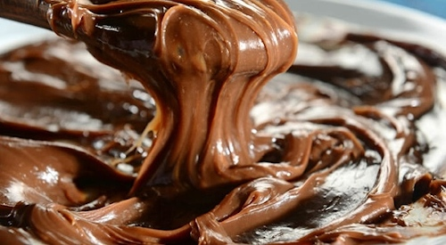

Brigadeiro de Colher

Description
Brigadeiro de colher ("spoon brigadeiro" in English) is a traditional Brazilian dessert. Part of its appeal comes from the fact that it's made with only three ingredients and is ready in 10 minutes (plus the cooling time). But none of this would really matter if it weren't delicious! And that it definitely is.
Ingredients
- 1 can (395g) sweetened condensed milk
- 60g (approx. 6 tablespoons) chocolate powder
- 10g (approx. 1 tablespoon) butter
Steps
- Melt the butter in a pot
- Add the condensed milk and the chocolate powder.
- Stir non-stop on medium heat until it starts to loosen from the bottom of the pot
- Pour it on a plate and let it cool